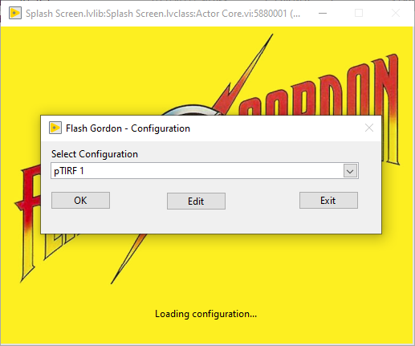
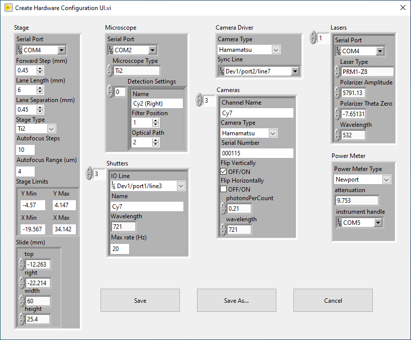

Configuration
FLASH is designed to support a variety of hardware configurations, with the settings for each instrument contained within a unique file in the “Config” folder. When FLASH starts, it will prompt the user to select amongst these files to determine which devices are present and the settings to use. You can modify any existing configuration files by clicking the “Edit” button below the list box. Clicking “Save” on this dialog will overwrite the selected configuration file, while “Save As…” will create a new file. To remove a configuration, simply delete the corresponding file in the Config folder. To rename a configuration, simply rename that configuration file on disk.


Below is a list of the configuration options:
DAQ Configuration
Shutters
IO Line: NI DAQ port connected to the shutter driver for this laser line.
Name: name of the camera channel associated with this laser.
Wavelength: wavelength of the laser line in nanometers.
Max rate (Hz): defines how rapidly the shutters can cycle before overheating and/or being damaged. Refer to your device’s manual for this number.
Device type: type of DAQ device connected. Choose “Disabled” if none available – cameras will use internal triggering.
COM Port: connection port for Microsync and Arduino devices.
Fluidics trigger line: NI DAQ port used for triggering fluidics.
Camera trigger line: NI DAQ port used for triggering the cameras.
Lasers
Laser Type: choose the driver type for this laser (LaserQuantum, OBIS, Coherent HOPS, PRM1Z8, or Disabled).
Serial Port: for RS232 connections (for LaserQuantum, OBIS, and Cobolt lasers).
Wavelength: wavelength in nanometers of the laser line. Must be identical to the number listed in the corresponding shutter configuration.
Polarizer theta zero (PRM1Z8 only): polarizer angle in degrees where light transmission is highest.
Polarizer amplitude (PRM1Z8 only): power in milliwatts of laser intensity reaching the sample when the polarizer is set to theta zero.
Stage
Stage Type: Select the stage driver or “Disabled” if none are connected.
Serial Port: connection port for ESP30x, Ludl, and ASI stages.
Forward Step (mm): sets how far the stage moves between successive movies (X direction). Controls the “Move Forward” button in the FLASH front panel. Should be adjusted so that the illumination intensity drops to zero at this distance so that the next field is not photobleached by the previous movie.
Lane separation (mm): controls how far the stage moves between successive lanes (Y direction).
Lane Length (mm): controls the usable area of the channel in the “forward step” direction. Adjust this to control the default photobleaching length.
Autofocus steps: number of frames (Z positions) to acquire for software autofocus (default 10).
Autofocus range (um): full range used for software autofocus. The steps size is range/(steps-1). Default is 4 µm.
Stage limits: defines software stage limits shown as a dotted line in the plate diagram in the Main Window. Set to -/+Inf to disable.
Slide (mm): slide dimensions used to translate stage X/Y coordinates to the slide image in the Main Window.
Microscope
Microscope Type: Set to “Disable” if no supported stand is installed.
Serial port: unused.
Detection settings: this array populates the “Detection” dropdown list in the Main Window and defines the position of the filter block and light path inside the microscope. For the Ti2 microscope, the light path values are as follows: (1) Eyepieces, (2) Right port, (3) Bottom/U port, (4) Left port.
Camera Driver
Camera Type: select the camera driver to use (Andor, Hamamatsu, or Photometrics).
Cameras
Channel Name: short string used to uniquely identify each camera. This should be one of the following: Cy2, Cy3, Cy5, Cy7. This field is not intended to specify the fluorophore or sample, but instead is the name of the spectral channel. This is used both in the user interface to identify each camera and in the metadata for automating analysis.
Serial Number: see camera documentation and stickers on the camera. This is typically a six-digit number that uniquely identifies the camera.
Flip Vertically: if true, raw images from this camera are flipped vertically so that it matches the orientation of the other cameras. If possible, arrange your optical system to avoid using any “flip” settings. Also please be aware that flipping vertically with sCMOS cameras may result in slight asynchrony between channels due to the line-by-line readout process; this will not be a problem in ALEX or stroboscopic modes and should not be an issue at all with Flash cameras.
Flip Horizontally: if true, raw camera images from this camera will be flipped horizontally for display and saving to file so that it matches the orientation of the other cameras.
photonsPerCount: photoelectrons per ADU (arbitrary camera readout units) conversion factor, as specified in the data sheet from the camera manufacturer. There is one entry in the array per camera readout mode. This is only used for metadata to assist in automating downstream analysis (e.g., in SPARTAN). This field can be left empty for Hamamatsu cameras because the conversion factors can be read from the camera.
Wavelength: wavelength in nanometers of the laser that is used to directly excite fluorophores in this spectral band. For integration with SPARTAN, it is important that this value matches the shutter/laser wavelength configured above.
Power meter
Power meter type: driver for the power meter or “Disabled” if none connected.
Instrument handle: COM port for RS232-connected devices (Newport).
Attenuation: power sensor reading is multiplied by this number to match the actual power reaching the sample.
Autosampler
Device Type: select the connected device, Simulated for testing, or Disabled if not used.
Serial port: COM port for connecting to the device
Valve Position Names: plain text names of each valve position (e.g., “1. Needle port”), used only for display in the Main Window.
The camera list can have any number of entries associated with all cameras in a laboratory or just a subset for each instrument. The lists for all other devices should include those actually connected to the instrument.
The default configuration file can be specified by editing the Init.xml file. Change the “Hardware Configuration File” value to the name of the configuration file you want to be the default. This file can also be modified so that the default corresponds to the hostname of the computer FLASH is run on. This is useful when running the software on many instruments within a facility.